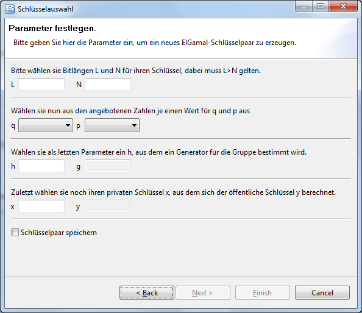
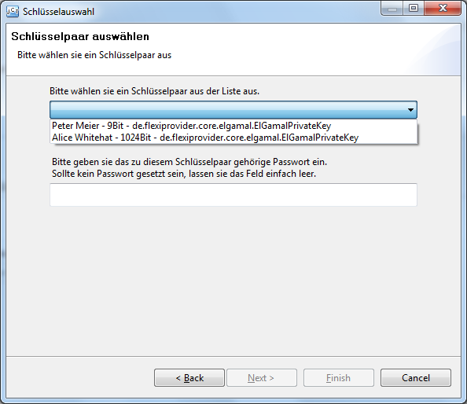
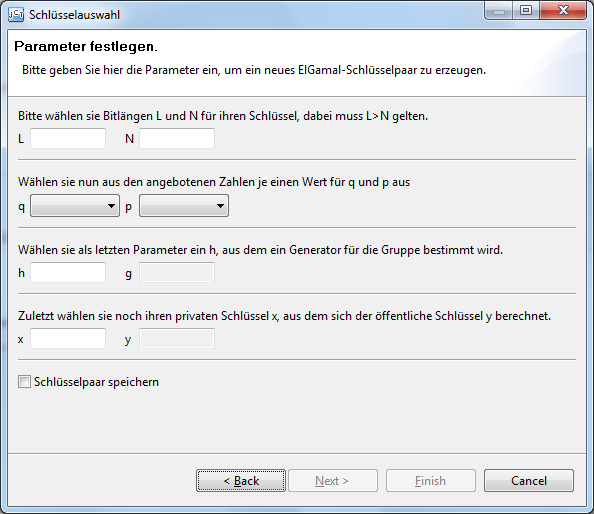
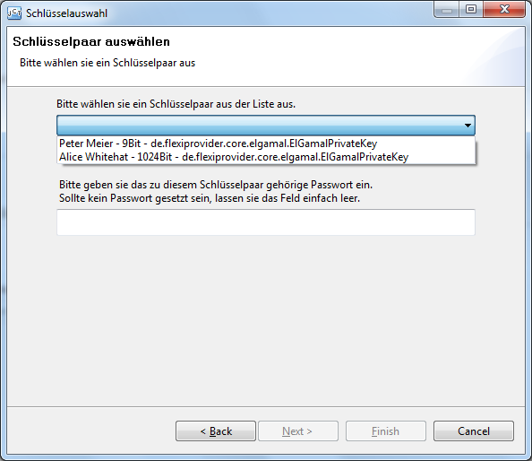

|  |  |
 |
 |
 |
This visualization shows the DSA Signature algorithm as described in the DSS found here and here.
This algorithm is one of the standard algorithms for digital signatures and it's visualization was derived from the common dummy-visualization which in turn was derived from the look and feel of the ECDH Visualization.
The main window is divided into four main parts, where the third one is the most important one.
The first part is the title of the visualization with a short description of the algorithm itself and a hint where it's security comes from.
This part has two radio-buttons to choose between the available actions for this visualization which are "sign" and "verify".
The algorithm section is the place where most of the action takes place. It is again divided into four parts.
The left quarter of the screen is reserved for some large buttons which are used to control the main flow through the visualization "key-selection", "text-entry", "choose parameters" and "calculate" which spawn a wizard each which is used to enter the corresponding values.
|  | |
 |
|
|
The other parts are for the following:
The options area contains a basic set of three buttons which are used to start a separate key-generation wizard, to toggle dialogs at every button press and to reset the visualization to start it from scratch.